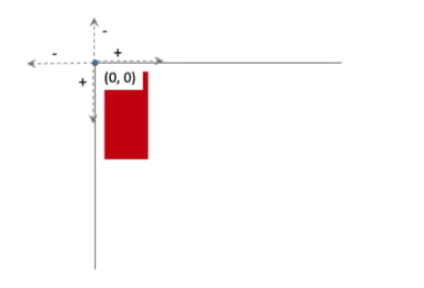
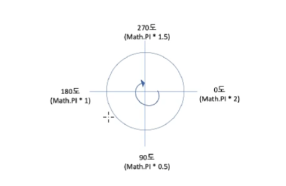

Chapter 14
Chapter 14 summary
Canvas
캔버스란
- <canvas> 태그 : 문서에 직접 그림을 그리는 태그로, 흔히 '캔버스'라고 부른다.
- HTML에 포함된 Canvas API를 사용하면 웹 문서 상에 직접 그래픽을 그릴 수 있다.
- Canvas API에는 도형을 그리거나 색칠하는 함수를 비롯해 선의 굵기나 색상 속성처럼 필요한 기능이 미리 만들어져 있어서 자바스크립트를 통해 얼마든지 자유롭게 사용할 수 있다.
- 자바스크립트와 Canvas API만 있으면 웹 브라우저 화면을 스케치북처럼 사용하면서 그림을 그릴 수 있다.
캔버스의 특징
- Canvas API를 이용하면 2차원 화면에 한 픽셀씩 그림을 그리는 것이기 때문에 그래픽을 세밀하게 제어할 수 있다.
- → UI나 차트 같은 그래픽보다 게임 캐릭터나 배경 이미지처럼 세밀한 제어가 필요한 그래픽 화면을 만들 때 주로 사용한다.
- → Canvas API는 오디오나 비디오를 포함할 수도 있고 자유로운 그래픽 편집도 가능하기 때문에 사용자의 동작에 반응하여 다양한 효과를 만들 수 있다.
웹 문서에 캔버스 만들기
- <canvas> 태그는 웹 페이지에서 그래픽을 제어할 수 있는 캔버스 영역을 지정한다.
- 캔버스 영역에 그림을 그리거나 이미지나 동영상을 불러와서 조작한다.
- 크기를 지정하지 않으면 웹 브라우저에서 지정한 크기만큼 만들어지고,
width와 height 속성을 사용하면 캔버스 크기를 직접 지정할 수 있다.
기본형
<canvas></canvas>
<canvas width="너비" height="높이"></canvas>
<div>
<h2>크기를 지정하지 않을 때</h2>
<canvas></canvas>
</div>
<div>
<h2>크기를 지정했을 때 400*300</h2>
<canvas width="400" height="300"></canvas>
</div>
렌더링 콘텍스트 만들기
- 웹 문서에 캔버스 요소를 추가했지만, 이것은 단지 영역만 만든 것이어서 비어 있는 상태
- 캔버스에서 무엇인가를 하려면 렌더링 콘텍스트를 만들어야 자바스크립트를 사용할 수 있다.
- 콘텍스트는 프로그램에서 무언가를 호출하고 응답할 수 있도록 환경을 만드는 것이라고 이해하자.
→ 콘텍스트를 만드는 순간부터 환경이 갖춰진다.
canvas.getContext("2d")
const canvas = document.querySelector('canvas'); // 캔버스 영역을 가져온다.
const ctx = canvas.getContext("2d"); // 2차원 콘텍스트 생성
ctx.fillStyle = "rgb(200,0,0)";
ctx.fillRect(10, 10, 50, 100);
캔버스에서 좌표

캔버스 영역의 왼쪽 위 구석을 원점(0, 0)으로 해서
오른쪽으로 갈수록 x 좌표값이 커지고
아래쪽으로 갈수록 y 좌표값이 커진다.
캔버스에서 각도

각도의 값은 라디안으로 표기.
radians = (Math.PI / 180) * degree
(예) 60°를 라디안으로 표현하려면 (Math.PI / 180) × 60
사각형을 그리는 3가지 메서드
- 캔버스에서 기본으로 제공하는 도형은 사각형뿐.
- 삼각형이나 원을 비롯한 다른 도형들은 경로를 이용해서 직접 해당 형태를 그려야 한다.
| 메서드 |
기능 |
fillRect(x, y, width, height) |
· (x, y) 위치부터 시작해서 지정한 너비와 높이만큼 색이 채워진 사각형을 그린다.
· 색상을 지정하지 않으면 검은색으로 채운다.
|
strokeRect(x, y, width, height) |
· (x, y) 위치부터 시작해서 지정한 너비와 높이만큼 테두리만 있는 사각형을 그린다.
· 선 색을 지정하지 않으면 검은색 선을 사용한다.
|
clearRect(x, y, width, height) |
· (x, y) 위치부터 시작해서 지정한 너비와 높이만큼 사각 영역을 지운다.
|
채우기 색과 선 색 지정하기
도형을 채울 색이나 선 색을 지정하는 속성
| 속성 |
기능 |
fillStyle = "색상" |
도형을 채우는 색상을 지정 |
strokeStyle = "색상" |
도형의 선 색상을 지정 |
- 이 속성은 사각형뿐만 아니라 캔버스에서 모든 도형에 사용할 수 있다.
- 색상 값은 색상 이름이나
rgb/rgba, 16진수값 등 모두 사용할 수 있다.
- 채우기 색이나 선 색은 스타일을 지정하면 해당 소스의 뒤에 오는 모든 도형에 똑같이 적용된다.
- 도형마다 다른 색을 채우거나 선을 사용하려면 도형마다 스타일을 각각 다르게 지정해야 한다.
(예) 사각형 그리기
const canvas = document.querySelector('canvas');
const ctx = canvas.getContext("2d");
ctx.fillStyle = "rgb(200, 0, 0)"; // 채우기 색 - 빨강
ctx.storkeStyle = "black"; // 선 색 - 검정
ctx.fillRect(10, 10, 200, 100); // 빨간색으로 채운 사각형
ctx.strokeRect(10, 10, 200, 100); // 선이 검은색인 사각형
ctx.fillStyle = "blue"; // 채우기 색 - 파랑
ctx.fillRect(50, 50, 120, 100); // 파란색으로 채운 사각형
ctx.clearRect(70, 80, 80, 45); // 사각형 지우기
사각형 외의 도형 그리기
beginPath() 메서드를 이용해 경로가 시작되는 것을 알린다.- 직선이든, 호든 원하는 경로를 그린다. 경로에 따라 사용하는 메서드가 달라진다.
closePath() 메서드를 이용해서 경로의 시작점부터 끝나는 점까지 선을 그린다.
(도형을 채울 경우에는 생략 가능)stroke() 메서드로 테두리를 그리거나 fill() 메서드로 도형을 채운다.
beginPath() : 경로가 시작되는 것을 알린다.closePath() : 경로 그리기가 끝났다고 알린다.moveTo() : 경로의 시작점을 (x, y)로 옮긴다.lineTo() : 지정한 위치(x, y)까지 경로를 만든다.stroke() : 경로를 선으로 그린다.fill() : 경로를 사용해 채운 도형을 만들었을 때 지정한 색으로 채운다.
beginPath()
closePath()
moveTo(x, y)
lineTo(x, y)
stroke()
fill()
(예) 직선 그리기
const canvas = document.querySelector('canvas');
const ctx = canvas.getContext("2d");
ctx.beginPath(); // 경로 시작.
ctx.moveTo(50, 50); // 경로 시작 위치 지정
ctx.lineTo(200, 200); // (200, 200)까지 경로를 만들기
ctx.closePath(); // 경로 닫기
ctx.stroke(); // 만든 경로를 선으로 그린다
삼각형 그리기
처음에 그린 직선의 끝점은 다음 직선의 시작점이 되고 그 직선의 끝점은 다시 다음 직선의 시작점이 된다.
이런 같은 방식으로 직선을 연결해서 도형을 그린다.
const canvas = document.querySelector('canvas');
const ctx = canvas.getContext("2d");
ctx.beginPath();
ctx.moveTo(50, 50);
ctx.lineTo(150, 100);
ctx.lineTo(50, 150);
ctx.closePath();
ctx.stroke();
ctx.beginPath();
ctx.moveTo(150, 100);
ctx.lineTo(250, 50);
ctx.lineTo(250, 150);
ctx.closePath();
ctx.fillStyle = 'rgb(0, 200, 0)';
ctx.fill();
원이냐 호 그리기
원이나 호를 그릴 때는 arc() 메서드 사용
arc(x, y, r, startAngle, endAngle [, counterClockwise])
- x, y: 원의 중심
- r: 원의 반지름
- startAngle: 원이나 호의 시작점을 라디안으로 표시
- endAngle: 원이나 호의 끝점을 라디안으로 표시
- counterClockwise: 반시계 방향으로 그릴지의 여부를
true나 false로 지정
(따로 지정하지 않으면 true로 인식)
(예) 원 그리기
const canvas = document.querySelector('canvas');
const ctx = canvas.getContext("2d");
ctx.fillStyle = "yellow"; // 채우기 색상
ctx.strokeStyle = "red"; // 선 색상
ctx.beginPath()
ctx.arc(200, 150, 100, 0, Math.PI * 2, true); // 0~360°까지 경로를 만들기.
ctx.closePath(); // 경로 닫기.
ctx.fill(); // 색상 채우기.
ctx.stroke(); // 선 그리기.
반원/호 그리기
반원 - 시작 각도와 끝나는 각도의 차이가 180°만 되면 그릴 수 있다.
호 - 시작 각도와 끝 각도를 지정한 후 회전 방향이 지정. 회전 방향에 따라 다른 모양의 호가 그려진다.
ctx.fillStyle = "red";
ctx.beginPath()
ctx.arc(420, 150, 80, 0, (Math.PI / 180) * 180, true); // 반시계 방향
ctx.arc(600, 150, 80, 0, (Math.PI / 180) * 180, false); // 시계 방향
ctx.fill();
반원/호 그리기
ctx.beginPath();
ctx.moveTo(120, 200);
ctx.arc(120, 200, 50, (Math.PI / 180) * 90, (Math.PI / 180) * 270, false);
ctx.stroke();
ctx.strokeStyle = "blue";
ctx.moveTo(200, 100);
ctx.beginPath();
ctx.arc(200, 200, 50, 0, (Math.PI / 180) * 60, false);
ctx.stroke();
타원 그리기
캔버스에는 타원을 그릴 수 있는 ellipse() 메서드가 있다.
타원은 가로 반지름과 세로 반지름의 길이를 따로 지정하기 때문에 arc() 메서드 기본형과 조금 다르다.
ellipse(x, y, radiusX, radiusY, rotation, startAngle, endAngle [, counterClockwise])
- x, y: 타원의 중심
- radiusX: 타원의 가로 반지름
- radiusY: 타원의 세로 반지름
- rotation: 타원 회전 크기. 라디안 값.
- startAngle: 타원의 시작점을 라디안으로 표시.
- endAngle: 타원의 끝점을 라디안으로 표시.
- counterClockwise: 반시계 방향으로 그릴지의 여부. 기본값
true
원을 변형해서 타원 그리기
원을 그린 후 scale() 메서드를 사용해서 원을 변경할 수 있다.
scale(x, y)
- x: 가로 방향으로 얼마나 확대/축소할지 지정
- y: 세로 방향으로 얼마나 확대/축소할지 지정
const canvas = document.querySelector('canvas');
const ctx = canvas.getContext("2d");
ctx.strokeStyle = "blue";
ctx.scale(1, 0.7); // 가로 길이는 그대로, 세로 길이는 축소
ctx.beginPath();
ctx.arc(200, 150, 80, 0, Math.PI * 2, true); // 바깥쪽 원
ctx.stroke();
ctx.beginPath();
ctx.arc(200, 150, 30, 0, Math.PI * 2, false); // 안쪽 원
ctx.stroke();
ctx.closePath();
2차 베지에 곡선
베지에 곡선은 조절점을 이용해서 부드러운 곡선을 그릴 수 있다.
현재 좌표에서 끝점 좌표 (x, y) 사이에 경로를 그리는데, 조절점을 통해 경로를 구부러지게 해서 곡선의 형태를 만든다.
조절점이 하나면 ‘2차 베지에 곡선’이라고 한다.
quadraticCurveTo(cpx, cpy, x, y)
- cpx, cpy: 조절점 좌표
- x, y: 곡선이 끝나는 점의 좌표
const canvas = document.querySelector('canvas');
const ctx = canvas.getContext("2d");
ctx.beginPath();
ctx.moveTo(50, 200);
ctx.quadraticCurveTo(200, 50, 350, 200);
ctx.stroke();
3차 베지에 곡선
두 개의 조절점을 사용해서 그리는 곡선을 3차 베지에 곡선이라고 한다.
bezierCurveTo(cp1x, cp1y, cp2x, cp2y, x, y)
- cp1x, cp1y: 첫 번째 조절점 좌표
- cp2x, cp2y: 두 번째 조절점 좌표
- x, y: 곡선이 끝나는 점의 좌표
const canvas = document.querySelector('canvas');
const ctx = canvas.getContext("2d");
ctx.beginPath();
ctx.moveTo(50, 100); // 곡선의 시작 위치
ctx.bezierCurveTo(90, 250, 310, 10, 350, 100);
ctx.strokeStyle = "green";
ctx.stroke();
path2D 객체 사용하기
- 경로도 많이 복잡할 뿐만 아니라 같은 경로를 반복해서 사용해야 할 경우도 있다.
- 캔버스에는 같은 경로를 반복하지 않기 위해 경로를 저장해 두는 Path2D 객체가 있다.
new Path2D()
new Path2D(경로)
let triangle = new Path2D();
triangle.moveTo(100, 100);
triangle.lineTo(300, 100);
triangle.lineTo(200, 260);
triangle.closePath();
let circle = new Path2D();
circle.arc(200, 155, 50, 0, Math.PI * 2);
ctx.fillStyle = "green";
ctx.stroke(triangle);
ctx.fill(circle);
[실습] 개구리 얼굴 그리고 저장하기
타원과 원 그리기를 활용해 개구리 얼굴을 그리기
1) 캔버스 영역을 가져와서 2차원 콘텍스트를 만든다.
const canvas = document.querySelector('canvas');
const ctx = canvas.getContext("2d");
2) 개구리 얼굴과 눈은 타원 형태로 그려야 한다.
전체적으로 타원으로 바뀌도록 scale() 함수를 사용한다
ctx.scale(1, 0.7); // 세로 길이 줄이기
4) 눈은 흰색으로 채우고 테두리는 초록색으로 그린 후 눈동자는 검은색으로 칠한다.
5) x 좌표값만 바꾸면 반대쪽 눈과 눈동자도 그릴 수 있다.
// 눈
ctx.beginPath();
ctx.arc(120, 80, 20, 0, Math.PI * 2, false);
ctx.moveTo(200, 80);
ctx.arc(180, 80, 20, 0, Math.PI * 2, false);
ctx.fillStyle = "white";
ctx.strokeStyle = "green";
ctx.fill();
ctx.stroke();
// 눈동자
ctx.beginPath();
ctx.arc(120, 80, 5, 0, Math.PI * 2, false);
ctx.moveTo(200, 80);
ctx.arc(180, 80, 5, 0, Math.PI * 2, false);
ctx.fillStyle = "black";
ctx.fill();
6) 입은 반원 형태로, 선으로만 그린다
// 입
ctx.beginPath();
ctx.arc(150, 150, 50, 0, (Math.PI / 180) * 180, false);
ctx.strokeStyle = "black";
ctx.lineWidth = 3; // 선 굵기
ctx.stroke();
7) 파일로 저장하기
- 웹 브라우저 화면에 그린 그래픽을 파일로 저장할 수 있다.
- 그래픽 부분을 마우스 오른쪽 버튼으로 클릭하고
바로가기 메뉴에서 [이미지를 다른 이름으로 저장]을 선택한다.
이미지 표시하기
캔버스에 이미지를 넣으려면
1) 이미지 객체를 만들고
2) 객체에 이미지 파일 경로를 지정한 후
3) 메서드를 사용해서 캔버스에 그립니다.
(예) spring.jpg 파일을 캔버스에 넣으려면
let img = new Image(); // 새로운 이미지 객체를 만든다.
img.src = "spring.jpg"; // 이미지 객체에 파일 경로를 지정한다.